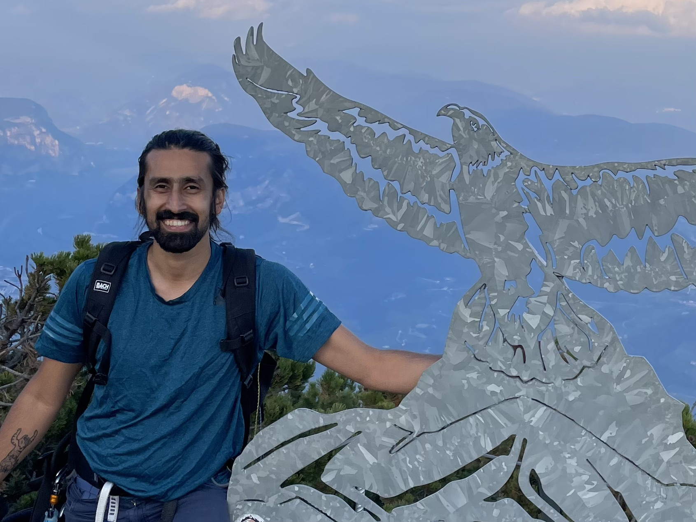

{"I am a postdoc working with [Péter Koltai](http://userpage.fu-berlin.de/peterkoltai/index.html) and [Gary Froyland](https://web.maths.unsw.edu.au/~froyland/) at FU-Berlin. In 2022 I obtained my PhD under [Hil Meijer](https://wwwhome.ewi.utwente.nl/~meijerhge/) titled 'Data, models and transitions in computational neuroscience"=>"bottom-up and top-down approaches' at the University of Twente, see [here]({{site.url}}{{site.baseurl}}/assets/thesis.pdf)."}
